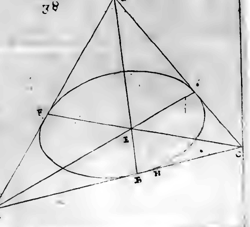

Propositio I · Theorema I & Corollarium (Conuersa Ceuae)¶


PROP. I. THEOR. I. (tab. 4. fig. 38, p. 38)
Si triangulum :g:`GAC` circulo vel ellipsi circumscribatur, contingantque latera sectionem in punctis :g:`F`, :g:`B`, :g:`D`; tres rectæ :g:`GB`, :g:`AD`, :g:`CF` ex angulis ad opposita contactuum puncta ductæ in vno eodemque puncto :g:`E` concurrunt.
COROLLARIVM (p. 38 — Theorema Conuersum): Ex hoc constat vicissim, si trianguli latera ita secentur vt productum rationum alternarum æquetur vnitati, tres rectas ex angulis ad sectionum puncta ductas in vno puncto necessario concurrere.